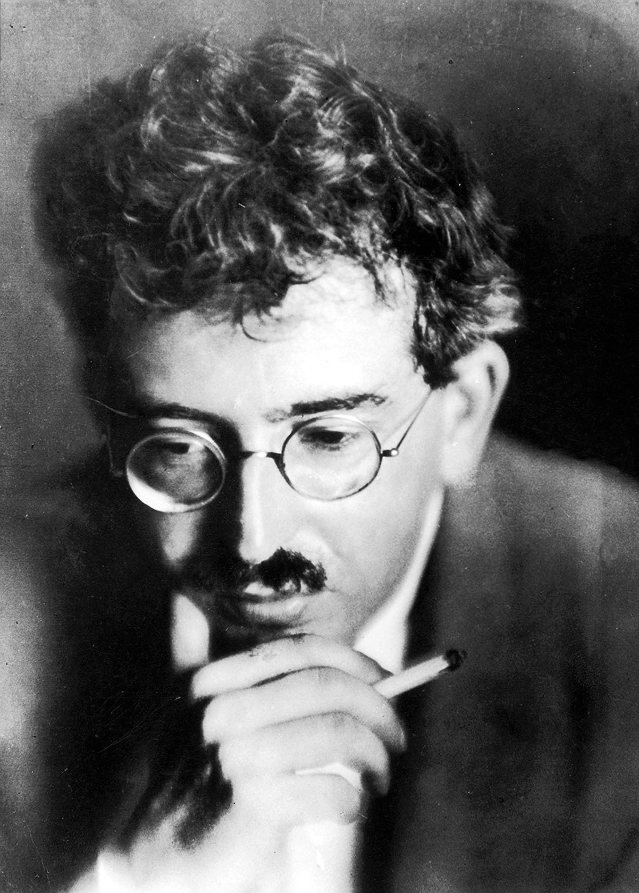

I recently reread Walter Benjamin's essay, The work of art in the age of mechanical reproduction during my research in Interactive Media. My thoughts remain largely unchanged, so I have quoted them here:
I reread Walter Benjamin's essay The work of art in the age of mechanical reproduction as I was looking into algorithmic art, and in particular, Samuel Monnier's 'fractal' Mondrian's. The depreciation of 'aura' (authenticity, uniqueness, authority, tradition) that Benjamin describes in his essay has only increased with the advent of digital reproductions and the internet. Now, an artwork is not only filtered through photographs and film, but through screenshots of photographs that have been emailed and downloaded and reproduced a hundred times.
Benjamin argues that this loss of aura leads to the practice of art becoming separate from cult/ritual practices, culminating in the doctine of l'art pour l'art. He warns that to strip an artwork of its cultural meaning, without imbuing it with some kind of political meaning, is dangerous, ultimately leading to the Futurists' (Facists') ideal of war as beautiful. I find this essay compelling and convincing, and I do feel scared that AI has again revolutionised the idea of reproduction. It produces images, words and video, by taking from the work of others and reproducing it as something with its own, new aura. How is this aura distinguishable from the aura of an artefact created by a human?
click here to read the entry in my workbook

make space!